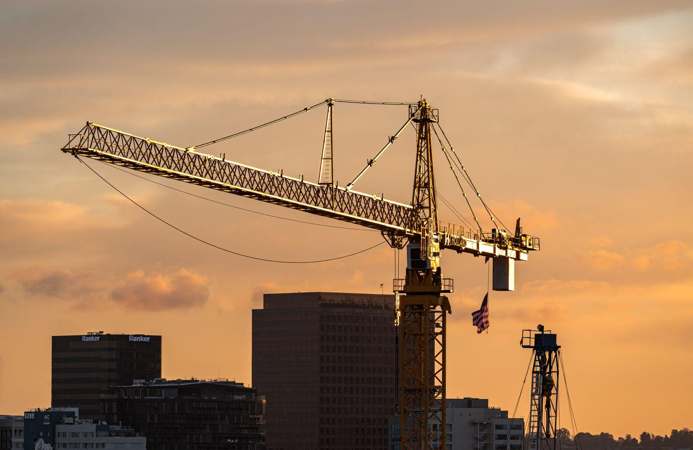
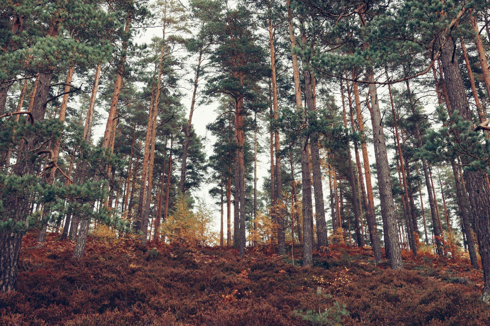

Bostadsfastigheter i Stockholmsregionen och Uppsala
En välfungerande och trygg vardag för alla
John Mattson äger, förvaltar och utvecklar 4 255 bostäder samt lokaler och tomträtter i Stockholmsregionen och Uppsala.
Koncernen
Läs om vår verksamhetVåra bolag
| Bolag | Segment | Verksamhet | Länk |
|---|---|---|---|
| Förvaltning | Bostäder | Fyra förvaltningsområden i Stockholmsregionen samt Uppsala. | |
| Bygg & utveckling | Nyproduktion | Nya punkthus och konvertering av outnyttjade lokaler – utan att ta grönområden i anspråk. | |
| Mellan husen | Social hållbarhet | Loppis, utomhusbio, odling och grillkvällar för hyresgäster och grannar. |
Projekt
Några av våra projekt
- Färdigt

Gengasen 4
129 lägenheter, LSS-boenden och lokaler.
- Kommande

Huvudsta
250 bostäder, minst hälften hyresrätter.
- Kommande

Hjälpslaktaren
Nyproduktion i Slakthusområdet.
- Färdigt

Vilunda
Stockholms första flerbostadshus för hållbar mobilitet.
- Kommande

Käppala
Nyproduktion av hyresrätter.
- Färdigt

Hägerstenåsen
120 lägenheter, två gruppboenden och en förskola.
Historia
Ett bostadsbolag med rötter på Lidingö
Från byggaren John Mattson till ett noterat bostadsbolag med 4 255 bostäder.
- 1915Byggmästaren John Mattson föds
- 1964Bygget av Larsberg på Lidingö startar
- 1965Fastighetsbolaget John Mattson grundas
- 2019Noteras på Nasdaq Stockholm
- I dag4 255 bostäder, främst i Stockholms närförorter
Aktuellt från koncernen
Alla projektDet här gör vi just nu


4 255 Bostäder1965 Förvaltningsbolaget bildas2019 Noterat på Nasdaq Stockholm100 år Livslängd vi bygger för4 255 Bostäder1965 Förvaltningsbolaget bildas2019 Noterat på Nasdaq Stockholm100 år Livslängd vi bygger för4 255 Bostäder1965 Förvaltningsbolaget bildas2019 Noterat på Nasdaq Stockholm100 år Livslängd vi bygger för
Vårt ansvar
Hus som ska stå i minst 100 år
Vi renoverar och bygger med hållbara material som åldras vackert. All el för driften är miljövarudeklarerad el från vattenkraft, och företagsbilarna byts successivt till eldrivna.
- 100 årminsta livslängd för våra nya hus
- 100 %el för driften från vattenkraft
- LEDnärvarostyrd belysning i trapphus och garage
